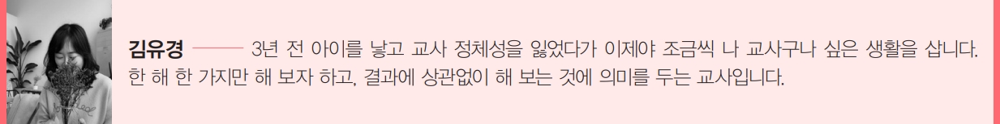

학생 평가의 전환 2
독서 구술 평가의 첫 시도 -김유경
1. 형식을 바꾸고 싶었습니다
그동안 중학교에서 한 학기 한 권 읽기를 꾸준히 해 오면서 대부분 글로 쓰는 수행평가를 했다. 책
대화도 시도해 보았지만 내가 만난 중학생 아이들과는 조금 버거운 느낌이었다. 책 읽고 독서 일지
쓰고 질문에 대한 내용을 쓰는 활동지, 서평까지는 아니지만 활동지를 바탕으로 한 편의 글을 쓰는
과정을 몇 년 동안 독서 활동으로 해 왔다.
올해는 교과교실제 강사 지원으로 한 학급을 1+1로 수업하게 되었다. 28~29명 정도의 아이들을
교사 두 명이 나눠서 가르치게 된 것이다. 교사당 학생 수가 줄어드니 수행평가에 좀 더 욕심을 부려
보고 싶었는데 그때 마침 송승훈 선생님의 구술평가를 보게 되었다. ‘글로 쓰는 것 말고 말하게 해
보자!’ 하고 수행평가의 형식을 바꿔 보고 싶은 마음에 올해 1, 2학기 한 번씩 총 2번의 독서 구술평
가를 했다. 더 읽기(유료)